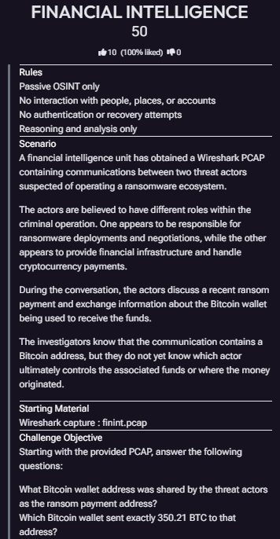
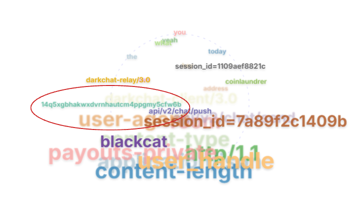
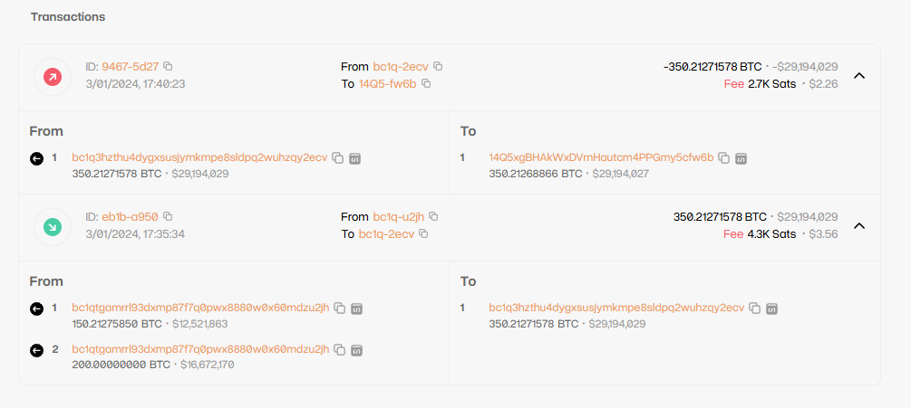

Following the Money: A Financial Intelligence Investigation
OSINT CTF Walkthrough | Network Forensics & Blockchain Analysis
Challenge Overview
This challenge involved investigating a suspected ransomware-related cryptocurrency transaction using a provided packet capture (PCAP). The objective was to identify the receiving Bitcoin wallet address shared by the threat actors and determine which sending wallet transferred approximately 350.21 BTC to that address. Using network analysis and publicly available blockchain records, I worked to identify both wallets, trace the transaction, and verify the cryptocurrency amount.

Step 1: Examining the Network Traffic
I began by examining the provided PCAP file using a publicly available PCAP analysis tool. The goal was to locate relevant information within the captured network traffic. By reviewing the extracted artifacts and word cloud, I identified a Bitcoin wallet address that could serve as a starting point for further investigation.

Step 2: Investigating the Bitcoin Transaction
After identifying the relevant Bitcoin address, I used a public blockchain explorer to investigate its associated transaction history. Blockchain explorers provide access to publicly recorded transactions, allowing analysts to examine transaction inputs, outputs, timestamps, and cryptocurrency amounts. I examined the receiving wallet's transaction history to locate the transfer of approximately 350.21 BTC. From there, I traced the transaction backward to identify the sending wallet responsible for transferring the funds.

Step 3: Verifying the Financial Information
Once both wallet addresses were identified, I examined the blockchain transaction details to verify that the transfer matched the amount specified in the challenge. The blockchain record showed a transfer of 350.21271578 BTC, approximately 350.21 BTC. I compared the transaction amount and associated wallet addresses against the original challenge information to confirm that I had identified the relevant transaction.
Investigation Results
Receiving Wallet
14Q5xgBHAkWxDVrnHautcm4PPGmy5cfw6b
Sending Wallet
bc1q3hzthu4dygxsusjymkmpe8sldpq2wuhzqy2ecv
Verified Transaction Amount
350.21271578 BTC (approximately 350.21 BTC).
The blockchain records established the relationship between the sending and receiving wallets and showed the subsequent movement of funds from the receiving address.
Key Takeaway
This challenge demonstrated how network forensics and open-source financial intelligence can complement one another.
By extracting relevant artifacts from network traffic and examining publicly accessible blockchain records, I was able to identify both sides of a cryptocurrency transaction and turn raw technical data into a structured financial intelligence finding.
It also reinforced the importance of verifying information across multiple sources rather than relying on a single piece of evidence.